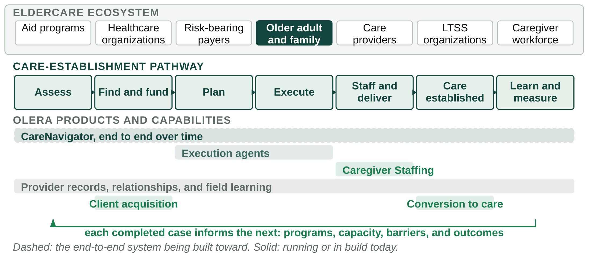

Internal working plan · 31 August 2026 to 1 January 2027
What this document covers. Olera has two jobs between now and 1 January: run the company and prepare the CRP application. This plan sets out what gets done, in what order, and what each piece of work is meant to establish. The two jobs are treated together because the commercial results produced over the next eighteen weeks are also the evidence the application will rest on.
Four things the application must avoid. It must not ask the CRP to fund work that reads as product development. It must not rest on a revenue model the company does not use. It must not describe the family product as more mature than it is. And it must not present provider revenue as evidence that institutions will pay for CareNavigator. Each of these is addressed by producing evidence before submission rather than by wording.
How to read this. Sections 2 and 3 describe the model and the five-year sequence. Sections 4 through 7 cover the four bodies of work. Section 8 is the January scorecard, organized by the risk each result addresses. Section 9 is the week-by-week plan. Section 10 states the intended end state. Four terms are used consistently: known means observed, hypothesized means believed but not shown, target means intended, and stretch means a good outcome the plan does not depend on.
From recognized need to established care. An older adult and their family sit within a set of organizations they do not choose: aid programs with eligibility rules, healthcare organizations managing discharge, payers bearing downstream risk, LTSS organizations, care providers, and a caregiver workforce smaller than demand. A recognized need becomes established care only after a sequence of steps: assessing the need, identifying services and funding, planning, completing administrative steps, staffing and delivering care, and adjusting as circumstances change. Most of that sequence is unsupported, and it is where failures occur.

Figure 1. The organizations around an older adult, the sequence a recognized need travels before care is established, and the step each Olera product acts on. Each product improves a different step of the same sequence.
Each Olera product addresses a step in that sequence. Caregiver Staffing supplies workers at the staffing step; an agency that cannot staff a case cannot establish care regardless of how well the earlier steps went. Client Growth addresses the two steps where a provider and a family find each other and convert that contact into a started case. Provider records and relationships support the sequence throughout, since planning depends on visible capacity. CareNavigator, shown dashed in Figure 1, is the end-to-end system the first generation is being built toward.
The provider products serve five purposes. They generate revenue. They demonstrate that Olera can sell, deliver, and retain customers. They deepen the provider relationships and record quality CareNavigator depends on. They give the company direct exposure to the operations of the agencies whose capacity determines whether care is established. And they produce a second source of field data on where the sequence fails.
The evidentiary boundary. Provider revenue demonstrates that Olera can commercialize. It does not demonstrate that a risk-bearing institution will pay for CareNavigator. The customers, budgets, buying processes, and evidence requirements are different, and the application should say so directly. CareNavigator has to establish its own commercialization case through product maturity, evidence, and direct buyer discovery. Section 6 covers that work.
Where the CRP sits. The CRP is one stage in a longer R&D and commercialization sequence. The sequence below is what Olera would pursue with or without the award. The award affects the pace and rigor of the middle stages rather than the direction.
| Period | What Olera builds | What Olera sells | What the period establishes |
|---|---|---|---|
| Phase I and IIB through 2026 | Assessment, benefit and program discovery, provider discovery, and the platform foundation. Usability and acceptance evidence with caregivers. | No family-side revenue. Caregiver Staffing sold to providers using company resources. | Families will use the product and the technology works. Known. |
| Pre-CRP Sep 2026 to Jan 2027 | First generation of bounded execution capability, and verification of the workflows that touch a live application or provider. | Two provider products in one beachhead segment, at set prices, to agencies. | Olera can sell, deliver, and retain, and the product is ready for late-stage validation. Target. |
| CRP Years 1 to 3 | No new product category. Design and quality controls, independent verification, and the instrumentation a controlled study requires. | Provider products continue on company revenue rather than CRP funds. | That a mature CareNavigator increases verified care establishment against a concurrent comparison. Hypothesized. |
| Post-CRP Years 4 to 5 | Integration work for the first institutional customers: eligibility feeds, referral handoffs, reporting. | A paid institutional proof of concept, then contracts. | That care establishment affects utilization or cost enough to support institutional purchase at scale. Hypothesized. |
| Beyond Year 5 | Determined by what the pathway data identifies as the next constraint. | Institutional contracts alongside the provider business. | Direction rather than forecast. Stretch. |
Table 1. The five-year sequence. Each period converts one kind of uncertainty into one kind of fact. The final column labels which of those are established and which remain hypotheses.
Implication for the application. Development belongs before CRP Day 1 and validation belongs within the CRP. That distinction is why Section 5 is a separate body of work with its own deadline. If an aim can be read as product development, it is in the wrong place.
Beachhead. Non-medical home care agencies. Assisted living is in scope only where the same offer and delivery apply without modification. Home health, skilled nursing, and the more heavily regulated segments are out of scope for this period, because their sales cycles are longer than the available window.
Olera Pro Staffing. Olera recruits, screens, onboards, and matches pre-health student workers to agencies, and agencies pay per successful hire. Known: more than 900 students have applied and 25 have been placed; four agencies trialed the service and three paid, at roughly $275 per placement, across multiple semesters. Target: ten to fifteen recurring provider customers by January. Stretch: 25 agencies averaging about three paid hires a month at $250, roughly $18,750 a month and about $225,000 annualized. The $250 figure is below what agencies have paid to date.
Olera Pro Client Growth. Olera helps agencies acquire and convert prospective clients through managed advertising, landing pages, lead qualification and follow-up, review generation, and search visibility. These are delivery components rather than separate products. The commercial test is whether agencies purchase again because the program produced measurable client acquisition. Target: ten to fifteen recurring customers with measurable delivery. This product is less proven than Staffing, and whether both run or one leads is a Week 1 decision.
Both remain company-funded. Neither provider product is a CRP aim, and neither should appear in the aims. They appear in the Commercialization Plan as evidence of commercial capability, and in the Environment discussion as evidence that the company can sustain itself.
Current state. CareNavigator today provides assessment, benefit and program discovery, and provider discovery, on a platform with real usage and a database of more than 72,000 LTSS records, with usability and acceptance evidence behind it. It does not yet include a mature, bounded execution capability that carries a family from a plan to a completed administrative step. The first generation of that capability is in development now, using Phase IIB and company resources, and completes before CRP Day 1. The application should describe it in those terms.
What the Phase IIB study provides. The Aim 3 study enrolls 200 caregivers of people with Alzheimer's disease and related dementias, at least half reporting a social need, and measures acceptance and caregiver outcomes: a modified technology acceptance measure, medication adherence, caregiving self-efficacy, and positive aspects of caregiving, with cognitive status as a covariate. It runs through the second quarter of 2027. Two consequences follow. It does not measure care establishment, so it is not preliminary effectiveness evidence for the CRP endpoint. And it does not report before January, so the application cannot rely on its results. Any care-establishment signal available by January will come from live use of the execution capability and will be limited in size.
The Week 4 deliverable. A written definition of what must be complete before CRP Day 1, what will be verified, and what is out of scope. Section 6 depends on being able to describe a specific product to a buyer, and the aim architecture depends on knowing where development ends and validation begins.
Working assumption. Assume no institution wants this until one shows otherwise. Risk-bearing organizations are approached regularly with proposals to reduce avoidable utilization, and most such conversations do not become budget lines. Expressed interest in a first meeting carries little information. A specific reason a buyer would not purchase is useful. The purpose of these conversations is to establish what would have to be true.
The fifteen questions. Each interview should work toward answers to the following. An interview that produces interest but no answers should be recorded as incomplete.
The standard by January. Minimum: several substantive interviews with target buyers, written up, recording disagreements as well as agreements. Target: convergence across buyers on endpoint, comparison, and evidence threshold, which allows the CRP aims to be designed against a stated requirement rather than an assumption. Stretch: written conditional interest in a post-CRP proof of concept from more than one organization. The plan does not depend on the stretch. Convergence alone improves both the Research Strategy and the Commercialization Plan.
Letters of support. A general letter of endorsement carries little weight with reviewers. A letter naming an endpoint, a population, and a condition under which the organization would participate carries substantial weight. December effort should go to the second kind.
Position. Investors are the audience for the results of the three operating tracks rather than a fourth track. Support should be sought against milestones as they are met. The thesis has seven parts, each addressing a different category of doubt.
The long-term position, stated carefully. The opportunity is to become the infrastructure layer for the care-establishment pathway, comparable to the role Zillow occupies in a transaction it does not itself perform. This is a direction rather than a current position. Olera does not own the pathway, the market size is not established, and the comparison is an analogy rather than a projection.
Organized by risk. The question is which doubts a reviewer or an investor could still hold on 1 January that could have been removed before then. Eight are addressed in this period. Each row states the risk, what would address it, the minimum that allows the application to rest on observed results, and the stretch.
| Risk | What would address it | Minimum by 1 January | Stretch |
|---|---|---|---|
| R1. Olera cannot sell | Agencies paying for a product delivered by the current team at current headcount, more than once. | Multiple providers paying for successful hires and several paying for client growth, with delivery documented. | 25 agencies averaging about three paid hires a month at $250, roughly $18,750 a month. |
| R2. Olera cannot deliver or retain | Repeat purchasing, measured churn, and stated acquisition and delivery costs. | At least one repeat purchase and a stated cost per acquired customer. | Retention and margin stable enough to project a run rate. |
| R3. CareNavigator is not built | The first generation of execution capability complete and testable on company and Phase IIB resources before CRP Day 1. | Core execution product complete and testable, with the critical workflows verified. | A preliminary care-establishment signal from live use. |
| R4. The buyer requirement is unknown | Interviews with risk-bearing organizations that answer the fifteen questions in Section 6 consistently. | Several substantive interviews with target buyers, written up. | Convergence on endpoint, comparison, and evidence threshold. |
| R5. There is no market pull | A buyer stating the conditions under which it would join a paid proof of concept. | One buyer engaged enough to review a draft proof-of-concept design. | Written conditional interest from more than one buyer. |
| R6. The CRP scope is wrong | An aim architecture limited to allowable late-stage activities, with development completed before Day 1. | Aims drafted against the buyer requirements and the allowable-activity list. | No development task identifiable within the aims. |
| R7. The team cannot carry both | Eighteen weeks of selling and drafting run concurrently without either stopping. | Weekly numbers unbroken from Week 1, and both documents drafted by Week 12. | Week 16 closes complete, with the final two weeks unused. |
| R8. Post-CRP funding is uncertain | Investors who understand the milestones and remain engaged as they are met. | Investors briefed on the milestone sequence and still engaged. | Support letters indicating financing interest conditional on CRP and commercial milestones. |
Table 2. The January scorecard, organized by the risk each result addresses rather than by the activity that produced it. Minimums are what allow the application to rest on observed results. Stretches are planning targets.
Status of these figures. They are planning targets rather than commitments, and should be reviewed with David and TJ in Week 1 against actual sales and delivery capacity. The application will report results as they occur.
| Scored criterion | What the January results provide |
|---|---|
| Significance | Market pull evidenced by buyer interviews rather than asserted, and a competitive read from agencies that have purchased (R4, R5). |
| Investigator(s) | A team that commercialized a product during the drafting period, with revenue and retention (R1, R2, R7). |
| Innovation | An execution capability that can be demonstrated rather than described (R3). |
| Approach | Aims limited to allowable late-stage activities, with the development boundary visible on the timeline (R6). |
| Environment | A company sustaining itself on revenue while running the project (R1, R2). |
| Commercialization Plan | Five-year milestones based on observed unit economics, and a revenue stream already collected (R1, R2, R8). |
| Fundraising Plan | Named investors who followed the milestones, engaged against a defined post-CRP financing need (R8). |
Table 3. Each January result is directed at a scored criterion. A task that cannot be traced to a row here is not pre-CRP work.
Where each risk appears in review. Development inside the aims is R6. A revenue model resting on projection rather than collection is R1 and R2. An overstated family product is R3, which is why Section 5 states the current product plainly and sets a Week 4 deadline for the CRP-entry definition. Thin evidence of market pull is R4 and R5.
How to read it. Eighteen weeks, from this week to submission. Each week has one objective, a short numbered task list, and a milestone. Owners are not assigned here; they are set in the Week 1 session. The bracketed tags link each task to the risk in Table 2 it addresses.
The operative deadline is 18 December. Week 16 is the internal deadline. 1 January is a federal holiday and the two weeks before it are unreliable, so the plan completes the work before the holidays and reserves the final fortnight for buffer and submission mechanics. Four weeks are checkpoints at which the plan is confirmed or revised. Two are holiday weeks with no planned work.
| Event | When | Why we attend | What the trip must produce |
|---|---|---|---|
| Nashville Healthcare Sessions | Confirm. Typically autumn | Provider and operator density in the target segment. | Named agency prospects and at least one buyer introduction. |
| ARC Summit | Confirm. Typically autumn | Aging and care-innovation buyers, and the investors who follow them. | Two buyer conversations booked for the following week. |
| HLTH | Confirm. Typically early Nov | The largest concentration of risk-bearing buyers and investors in the period. | Feedback on proof-of-concept design and decision thresholds from at least three organizations. |
| IHI Forum | Confirm. Typically early Dec | Quality and population-health leaders who own the outcomes a contract would reference. | A view on which endpoint a quality leader finds credible. |
| JP Morgan Healthcare | Confirm. Typically early Jan | Falls after submission. A calendar constraint rather than an activity in this plan. | No objective. January travel planning should not consume December. |
Table 4. Conference objectives. Each row states what would make the trip worthwhile. No date here is confirmed. Confirm all five before approving the week plan, and move the affected weeks if they differ.
Standing weekly routine. Monday, thirty minutes on the numbers: outreach, meetings, offers, conversions, active customers, delivered outcomes, repeat purchasing, revenue, and churn. Friday, numbers updated and a short note on what changed. End of each month, a review against Table 2 stating which level the company is tracking to.
Week 1 August 31 to September 4 CHECKPOINT
Set the plan and the baseline
Milestone. Plan approved, owners named, baseline recorded.
Week 2 September 7–11
Package the offers
Milestone. Offers, pricing, and sales workflow documented.
Week 3 September 14–18
Begin outreach and buyer discovery
Milestone. Outreach underway and the first buyer calls scheduled.
Week 4 September 21–25
Define the CRP-entry state
Milestone. The development and validation boundary is documented.
Week 5 September 28 to October 2 CHECKPOINT
First close and Month 1 review
Milestone. First revenue recorded, or a documented account of why not.
Week 6 October 5–9
Make delivery repeatable
Milestone. Delivery cost for the second customer is lower than for the first.
Week 7 October 12–16
Second cohort and first repeat purchase
Milestone. One customer has purchased twice.
Week 8 October 19–23
Consolidate the buyer requirements
Milestone. A written statement of what a buyer would require.
Week 9 October 26–30 CHECKPOINT
Month 2 review and conference preparation
Milestone. January minimums confirmed as reachable, or the plan revised.
Week 10 November 2–6
Conference week
Milestone. Three organizations have responded to a specific proof-of-concept design.
Week 11 November 9–13
Follow up
Milestone. Every conference conversation has a scheduled next step.
Week 12 November 16–20
Draft the application
Milestone. Both documents drafted end to end.
Week 13 November 23–27 HOLIDAY
Thanksgiving week
Milestone. No slippage.
Week 14 November 30 to December 4
Establish the unit economics
Milestone. Unit economics documented from actual results.
Week 15 December 7–11
Fix the evidence
Milestone. Application figures final.
Week 16 December 14–18 CHECKPOINT
Complete
Milestone. Application ready to submit. This is the internal deadline.
Week 17 December 21–25 HOLIDAY
Holiday week
Milestone. No work scheduled.
Week 18 December 28 to January 1 CHECKPOINT
Submit
Milestone. Submitted.
The target for 1 January. Olera submits an application in which the commercial claims are observations rather than projections; the aims cover late-stage validation only, with development completed before Day 1; the evidence requirements reflect what prospective institutional buyers said they would need; and the investors who would finance the post-CRP proof of concept have followed the milestones as they were met. Each week in Section 9 is directed at one of the eight risks in Table 2.
The remaining gap. Whether families need navigation, and whether Olera can build a provider audience, are settled questions. The open question is whether a mature CareNavigator can reliably increase verified care establishment, with evidence sufficient for a risk-bearing organization to fund a paid proof of concept and then purchase. Before submission, Olera demonstrates commercial execution using its own resources and lets prospective buyers define the evidence CareNavigator must produce. The CRP is then directed at the validation that produces it.
Required by Friday of Week 1. Agreement on the Table 2 minimums against actual capacity. A decision on whether both provider products run or one leads. Confirmed conference dates. Named owners for each of the eighteen weeks. And the first set of weekly numbers, so that later results have a baseline to be measured against.